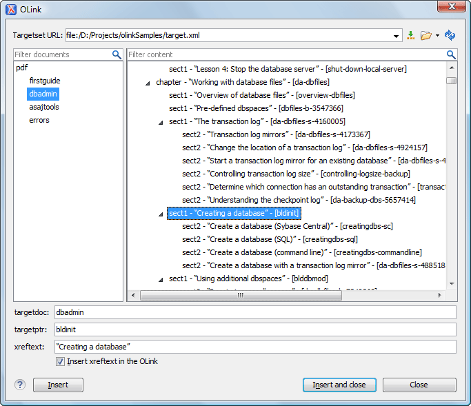

Inserting an Olink in DocBook Documents
The <olink> element is used for linking to resources outside the current
DocBook document. The @targetdoc attribute is used for the document ID that
contains the target element and the @targetptr attribute for the ID of the
target element (the value of an @id or @xml:id attribute).
The combination of those two attributes provides a unique identifier to locate cross
references.
For example, a Mail Administrator Guide with the document ID
MailAdminGuide might contain a chapter about user accounts, like
this:
<chapter id="user_accounts"> <title>Administering User Accounts</title> <para>blah blah</para>
You can form a cross reference to that chapter by adding an <olink>, as in
the following example:
You may need to update your <olink targetdoc="MailAdminGuide" targetptr="user_accounts">user accounts </olink> when you get a new machine.
To use an <olink> to create links between documents, follow these steps:
-
Decide which documents are to be included in the domain for cross referencing.
A unique ID must be assigned to each document that will be referenced with an
<olink>. It is usually added as an@id(or@xml:idfor DocBook5) attribute to the root element of the document. -
Decide on your output hierarchy.
For creating links between documents, the relative locations of the output documents must be known. Before going further you must decide the names and locations of the output directories for all the documents from the domain. Each directory will be represented by an element:
<dir name="directory_name">, in the target database document. -
Create the target database document.
Each collection of documents has a master target database document that is used to resolve all olinks from that collection. The target database document is an XML file that is created once. It provides a means for pulling in the target data for each document. The database document is static and all the document data is pulled in dynamically.Tip: Oxygen XML Author includes a built-in new document template called DocBook Targetset Map available in the New document wizard that will help you get started.Example: The following is an example of a target database document. It structures a collection of documents in a
<sitemap>element that provides the relative locations of the outputs (HTML in this example). Then it pulls in the individual target data using system entity references to target data files that will be created in the next step.<?xml version="1.0" encoding="utf-8"?> <!DOCTYPE targetset [ <!ENTITY ugtargets SYSTEM "file:///doc/userguide/target.db"> <!ENTITY agtargets SYSTEM "file:///doc/adminguide/target.db"> <!ENTITY reftargets SYSTEM "file:///doc/man/target.db"> ]> <targetset> <targetsetinfo> Description of this target database document, which is for the examples in olink doc. </targetsetinfo> <!-- Site map for generating relative paths between documents --> <sitemap> <dir name="documentation"> <dir name="guides"> <dir name="mailuser"> <document targetdoc="MailUserGuide" baseuri="userguide.html"> &ugtargets; </document> </dir> <dir name="mailadmin"> <document targetdoc="MailAdminGuide"> &agtargets; </document> </dir> </dir> <dir name="reference"> <dir name="mailref"> <document targetdoc="MailReference"> &reftargets; </document> </dir> </dir> </dir> </sitemap> </targetset>
-
Generate the target data files by executing a DocBook transformation scenario.
Before applying the transformation, you need to edit the transformation scenario, go to the Parameters tab, and make sure the value of the
collect.xref.targetsparameter is set toyes. The default name of a target data file is target.db, but it can be changed by setting an absolute file path in thetargets.filenameparameter.Example: An example of a target.db file:<div element="book" href="#MailAdminGuide" number="1" targetptr="user_accounts"> <ttl>Administering User Accounts</ttl> <xreftext>How to administer user accounts</xreftext> <div element="part" href="#d5e4" number="I"> <ttl>First Part</ttl> <xreftext>Part I, “First Part”</xreftext> <div element="chapter" href="#d5e6" number="1"> <ttl>Chapter Title</ttl> <xreftext>Chapter 1, Chapter Title</xreftext> <div element="sect1" href="#src_chapter" number="1" targetptr="src_chapter"> <ttl>Section1 Title</ttl> <xreftext>xreflabel_here</xreftext> </div> </div> </div> </div>
-
Insert
<olink>elements in the DocBook documents.When editing a DocBook XML document in Author mode, the Insert OLink action is available in the Link drop-down menu from
the toolbar. This action opens the Insert OLink dialog box that
allows you to select the target of an
Link drop-down menu from
the toolbar. This action opens the Insert OLink dialog box that
allows you to select the target of an <olink>from the list of all possible targets from a specified target database document (specified in the Targetset URL field). Once a Targetset URL is selected, the structure of the target documents is presented. For each target document (@targetdoc), its content is displayed, allowing you to easily identify the appropriate@targetptr. You can also use the search fields to quickly identify a target. If you already know the values for the@targetdocand@targetptrattributes, you can insert them directly in the corresponding fields.Example: In the following image, the target database document is called target.xml, dbadmin is selected for the target document (
@targetdoc), and bldinit is selected as the value for the@targetptrattribute. Notice that you can also add XREF text into the<olink>by using the xreftext field.Figure 1. Insert OLink Dialog Box  -
Process a DocBook transformation for each document to generate the output.
-
Edit the transformation scenario and set the value of the
target.database.documentparameter to be the URL of the target database document. - Apply the transformation scenario.
-
Edit the transformation scenario and set the value of the